| 日付 | 2009年4月4日（土） |
|---|---|
| 山域 | 北アルプス |
| メンバー | 単独 |
| 山行形態 | 前夜発日帰り |
| アクセス | 電車 |
| ルート (Map) | 安曇沓掛駅→白沢登山口→鍬ノ峰→仏崎観音寺→信濃大町駅 |
最近、北アルプスの展望が非常に良いらしい、鍬ノ峰という山の存在を知った。
長野県の山なので、青春18切符が使える間に行っておきたい。
ネットで調べると、昨年の3月中旬の挑戦の記事が載っていて
雪が深すぎ登山道入口までにも辿り着けなかったと記述されていた。
今年は雪が少なく、もう4月に入っているので
登頂の可能性はあると思い、とりあえず行って見ることにする。
5:44 安曇沓掛駅到着。標高645m。
久々の夜行列車ムーンライト信州号に乗って信州に入る。
列車は混雑していたが、登山客はほとんどいなかった。
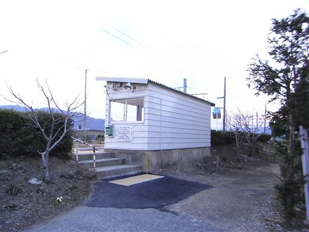
登山道入口までは延々と車道を歩いていく。
バスの便はないので、マイカーかタクシーを使うのが普通のようだ。

目の前には北アルプスの白い山並が良く見える。
左から爺ヶ岳、鹿島槍ヶ岳、五竜岳だ。
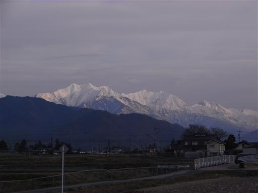
車道を歩いている途中で日の出を迎える。
北アルプスが日の光を浴びて赤く染まりだす。
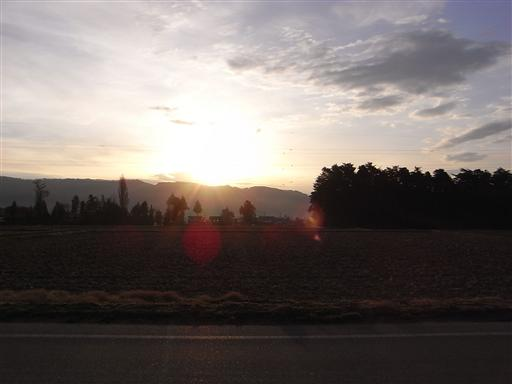
早朝なので通る車はなく、展望のよい快適な道を歩いていく。
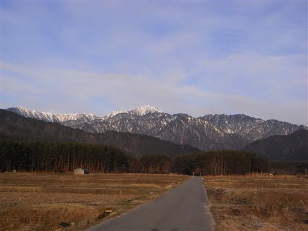
鍬ノ峰の姿が見えてきた。この山は北アルプスの前衛峰で、
それゆえ山頂からの北アルプスの展望は素晴らしいらしい。
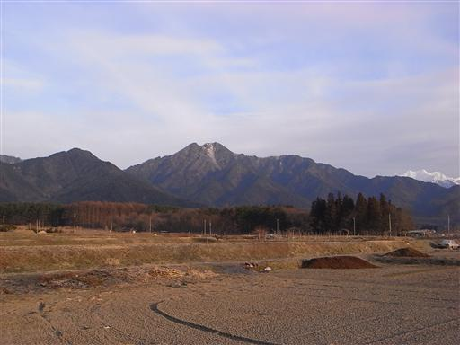
登山口に向かって林道に入っていく。心配していた雪は全く積もっていない。
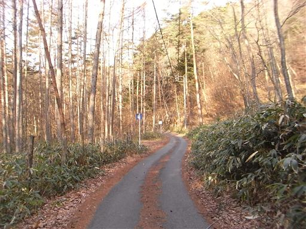
林道脇に鳥獣供養之碑というものがある。
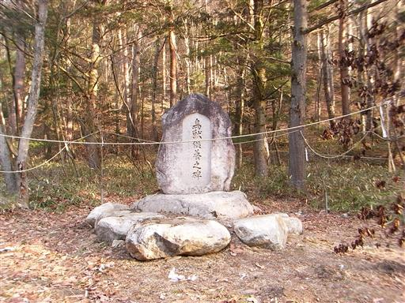
すぐ側には常盤山の神と書かれた神社がある。
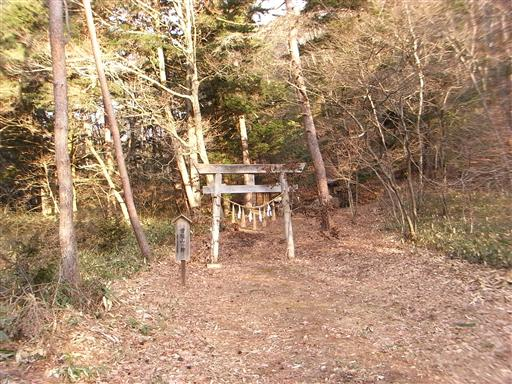
今日の登山の成功を願って手を合わせていくことにする。
林道脇にはこの他にもいくつかの小さな神社があった。
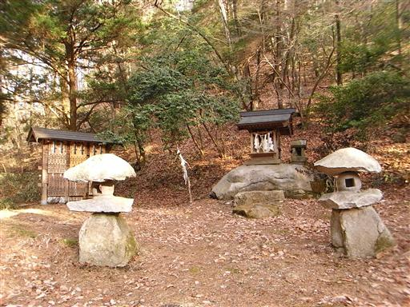
餓鬼岳登山口に到着する。ここから左に行くと餓鬼岳だ。
近くの駐車場には車が一台も停まっていなかった。
さすがにこの時期に餓鬼岳に登る人はほとんどいなさそうだ。
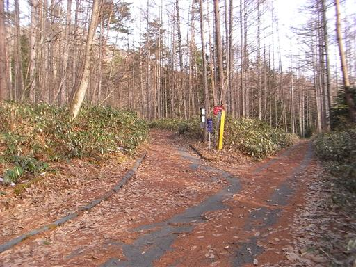
鍬ノ峰の登山道入口まで、さらに車道の奥まで歩いていく。
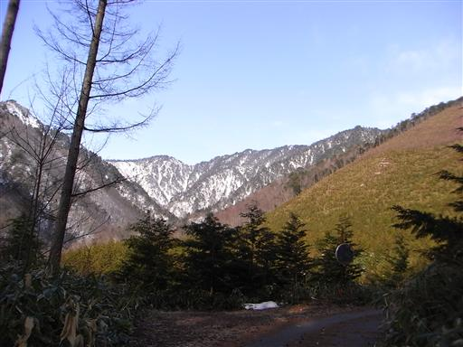
林道を歩いている途中に追い抜いていった車が停まっている。
どうやら今日はもう一人鍬ノ峰に登る人がいるようだ。
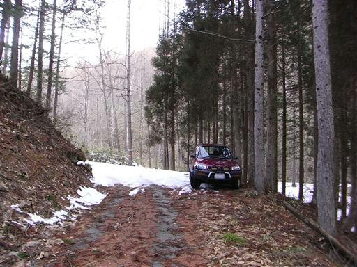
ここから先、車道は雪に覆われる。車の主にはすぐに追いついた。
目的地は同じということで一緒に登ることにする。地元、松本在住だそうだ。
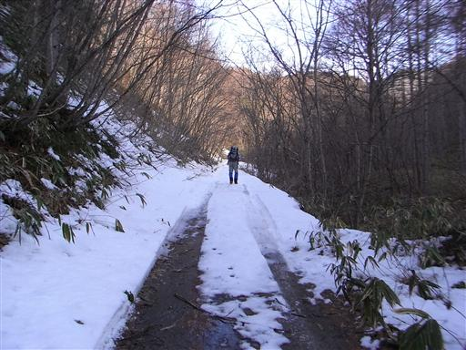
鍬ノ峰登山道入口に到着する。登山道に入る案内標識はかなり控えめだ。
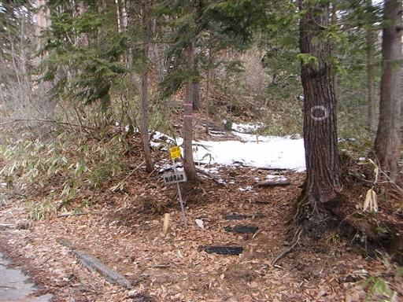
登山道は笹に覆われていて整備されているとは言い難い。
この山は最近人気が出てきて、登山シーズンが近づくときれいに整備されるらしい。
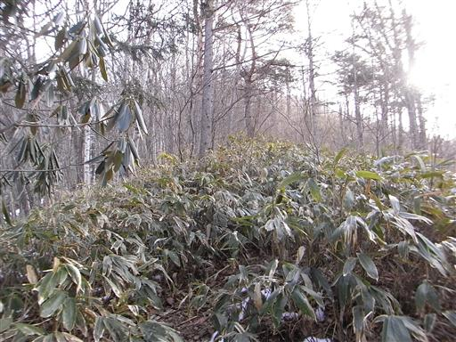
奥の方に白い山々の頭が見えてくる。
今日の天気は晴後雨という微妙な予報。
いつまでこの青空がもってくれるだろうか…
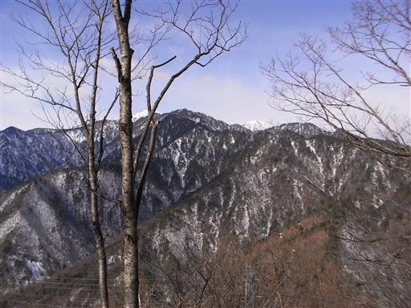
概ね歩きやすい登山道だが、一箇所だけ岩場をトラバースする危険箇所がある。
右側は崖で、落ちると極めて危険だ。
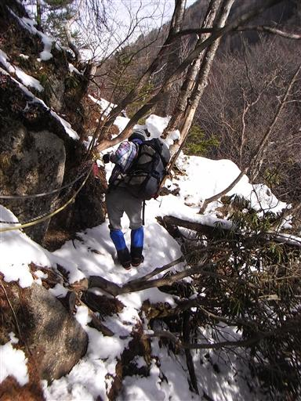
所々で展望が開ける。目の前の餓鬼岳が非常に大きい。
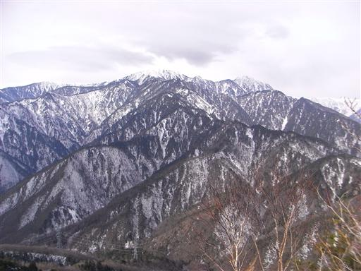
ペースはなかなか上がらない。決して遅い歩みではないのだが、
天気予報のことを考えると少しでも早く山頂にたどり着きたい。
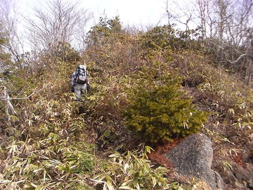
登山道から白い峰々が見えてきた。山頂への期待が膨らむ。
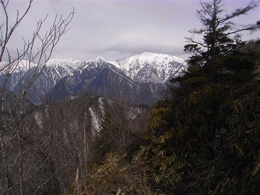
目の前に鍬ノ峰の山頂部が見えてくる。
少し雪が出てきたが、歩くのに支障はない。
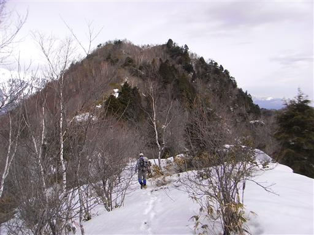
8:41 鍬ノ峰山頂到着。標高1623m。
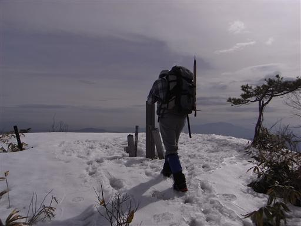
山頂は360度さえぎるものの無い大展望台。
真正面に北アルプスの大パノラマが広がる。
不動岳、七倉岳、北葛岳、針ノ木岳、蓮華岳など。
見えるのが北アのマイナーピークばかりなのが少し残念だ。
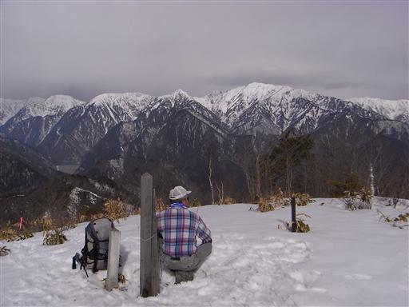
山頂から一番立派に見えるのは蓮華岳。この時期にしては雪は少ない。
左に見える三角形の山は名峰・針ノ木岳だ。
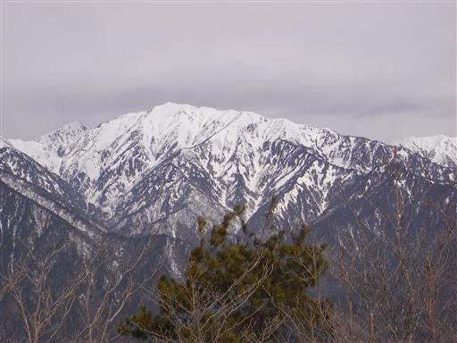
北方には後立山連峰の真白なピークが望める。
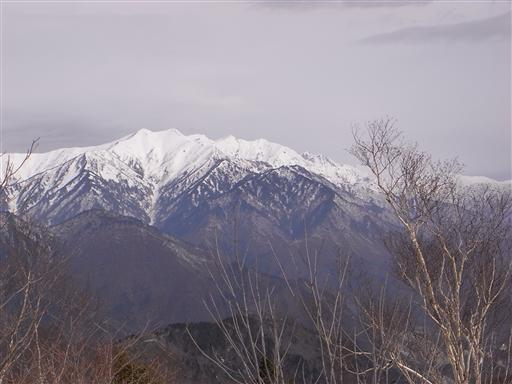
はるか遠くの方に、かつて登った頸城の山々が微かに見えている。
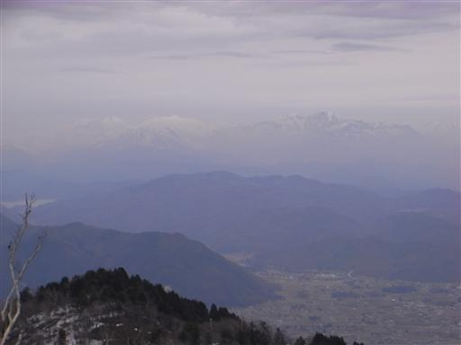
眼下には高瀬川、その向こうには浅間山、四阿山が見えている。
だいぶ雲が出てきたが、これだけの展望が得られれば満足だ。
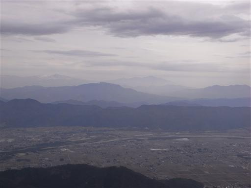
40分ほど展望を楽しみ、下山することにする。
北側斜面には近年開かれた登山道がある。
こちらの斜面は雪が深く、足跡もないため少し迷ったが、
当初の予定通り、こちらの道から下山する。

吹き溜まりとなっているところはそれなりに雪が深いが、
下りなので歩くのにそれほど支障はない。
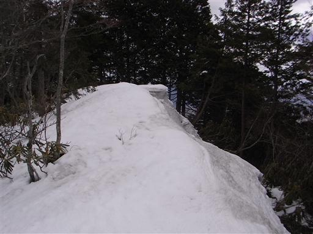
あちらこちらにシャクナゲが見られる。花期にはこの山は大混雑するそうだ。
登山道が全く見えないので、シャクナゲの藪をかわしながら歩いているとたびたび尾根を外してしまう。
雪上にかなりでたらめな足跡を残してしまった。

周囲は曲がりくねった巨大なお化け檜がたくさんある。
植林地帯の整然と並ぶ檜とは全くの別物だ。
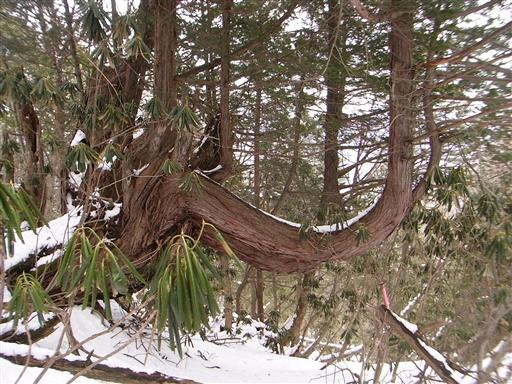
下のほうまで下りて来ると雪もなくなる。
振り返ると鍬ノ峰が高い。
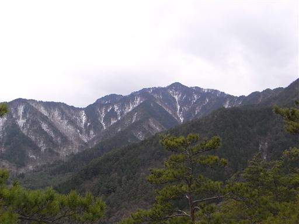
眼下に高瀬川が見えてきた。もうすぐ下山だ。
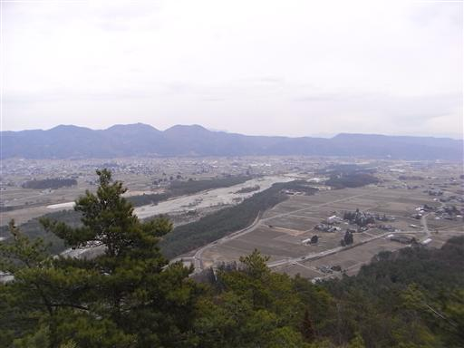
中腹にお堂が建っている。登山道入口にある仏崎観音寺と関係するものかもしれない。
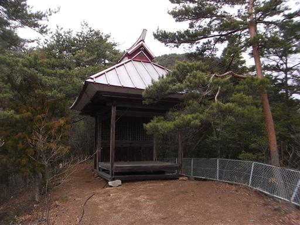
ここにはなんと鐘まで置かれている。
こんな重たいものをどうやってここまで運び上げたのだろう？
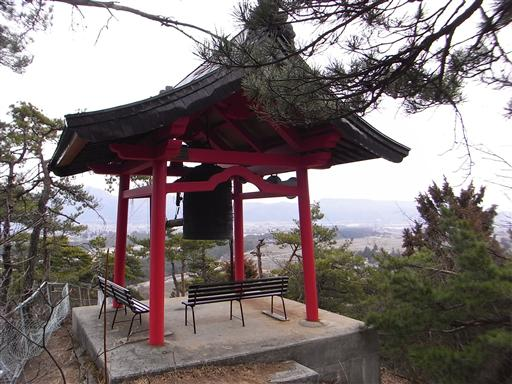
鐘を撞く棒にはなにやら仕掛けが施されているように見える。
時間が来たら自動的に動作するようになっているのだろうか？
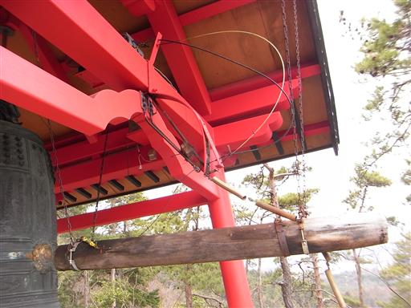
無事に下山。登頂成功率は50%程度と思っていたが、幸い何の障害も無く登頂できた。
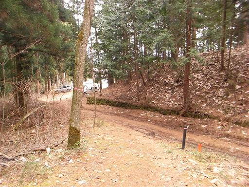
仏崎観音寺に寄って行くことにする。
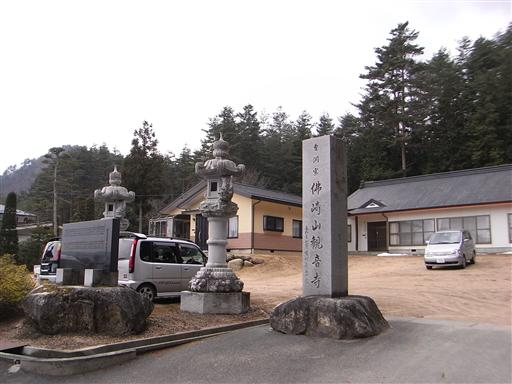
上から見ると赤い屋根がちゃっちく見えたが、近くに来てみるとなかなか立派な寺であることが分かる。
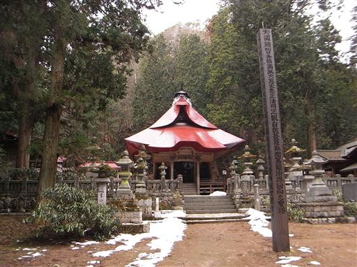
仏崎観音寺を後にし信濃大町駅をめざしてまた延々と車道を歩いていく。
さすがにこの時間になると車通りが多く、車道歩きは辛い。
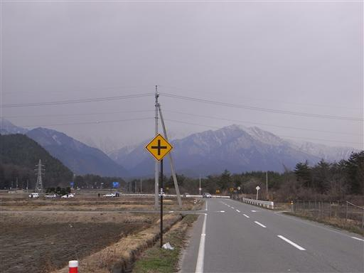
高瀬川に架かる橋から北アルプスを望む。
だいぶ雲が出てきて、高い山々はもう隠れてしまっている。
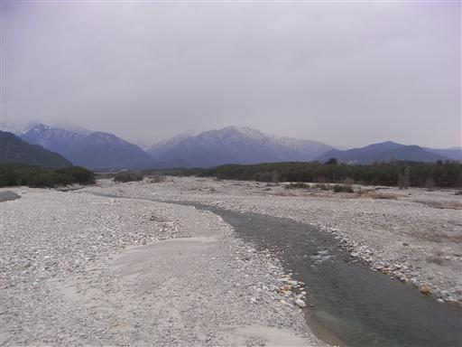
12:48 信濃大町駅到着。標高710m。
この駅は北アルプス登山の起点となる場所。今年の夏にまた来ることになるかもしれない。
18切符を使って鈍行でゆっくり東京に戻る。
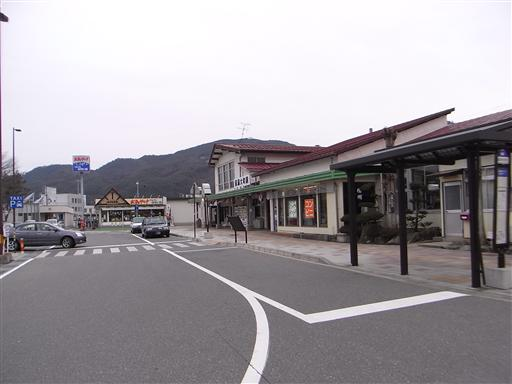